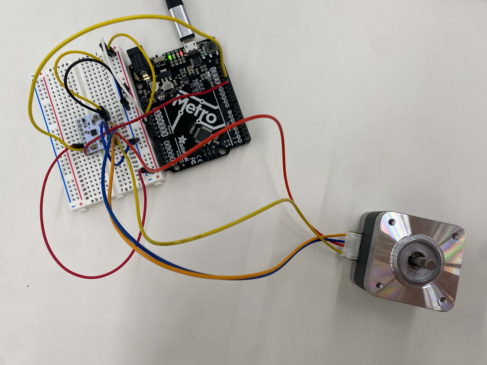
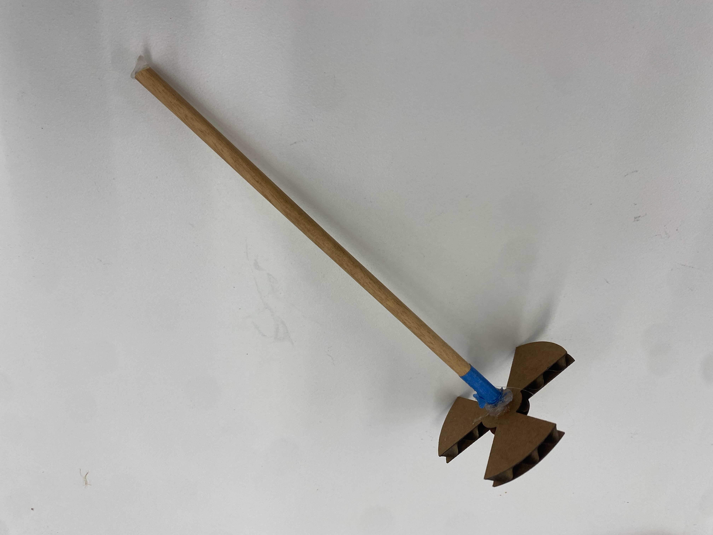

This week, the assignment was to make a machine that has at least one stepper motor and to demonstrate you can calibrate its position. I wanted to work on the dispensing mechanism for my final project, and this week was actually what convinced me to use a stepper motor. It's a lot more precise and it would be way easier to time for the different amounts of food to dispense.
First, I had to code the circuit. I had the DRV8834 Low-Voltage Stepper Driver, and I referenced the product page for the set up. Here is what I came up with:
Next, to code the stepper motor itself. I wanted to make a piece that would open and close depending on the time, so I made a *very* rough design for it. Essentially, the DC motor would hang from somewhere and a dowel connected to the mechanism would spin it.
I next had to make the code, which I based off of this website.
The code is below:
// Include the AccelStepper Library
#include <AccelStepper.h>
// Define pin connections
const int dirPin = 12;
const int stepPin = 13;
// Define motor interface type
#define motorInterfaceType 1
// Creates an instance
AccelStepper myStepper(1, stepPin, dirPin);
void setup() {
pinMode(stepPin, OUTPUT);
pinMode(dirPin, OUTPUT);
myStepper.moveTo(200);
}
void loop() {
digitalWrite(dirPin, HIGH);
for (int x = 0; x < 100; x++)
{
digitalWrite(stepPin, HIGH);
delay(2.5);
digitalWrite(stepPin, LOW);
delay(2.5);
}
}
delay(1500);
}
Finally, the video on how it works! Obviously, it will be a lot more defined in the final project.